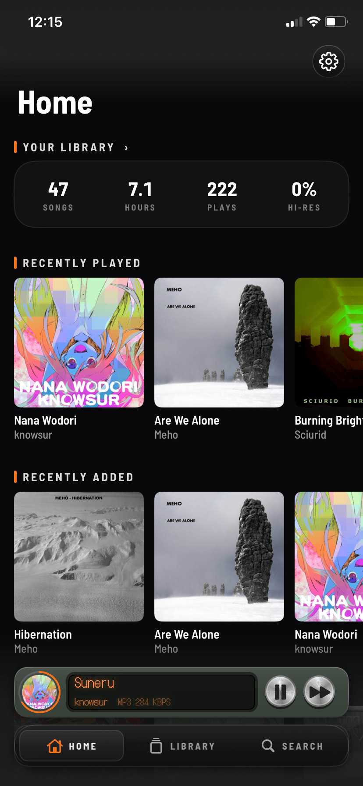
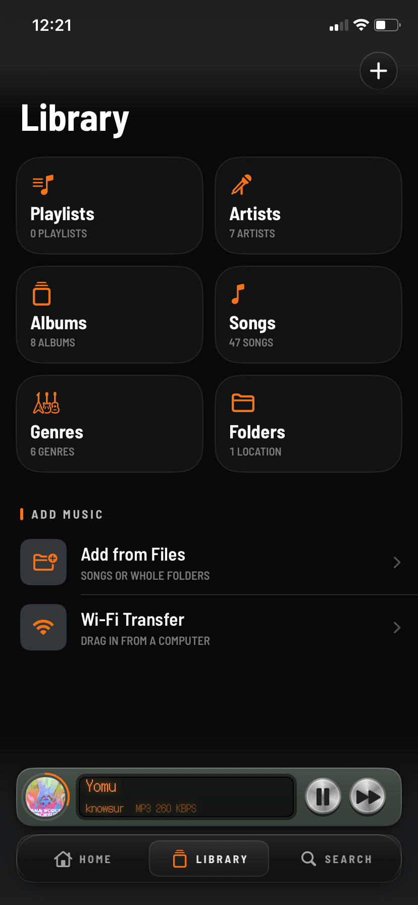
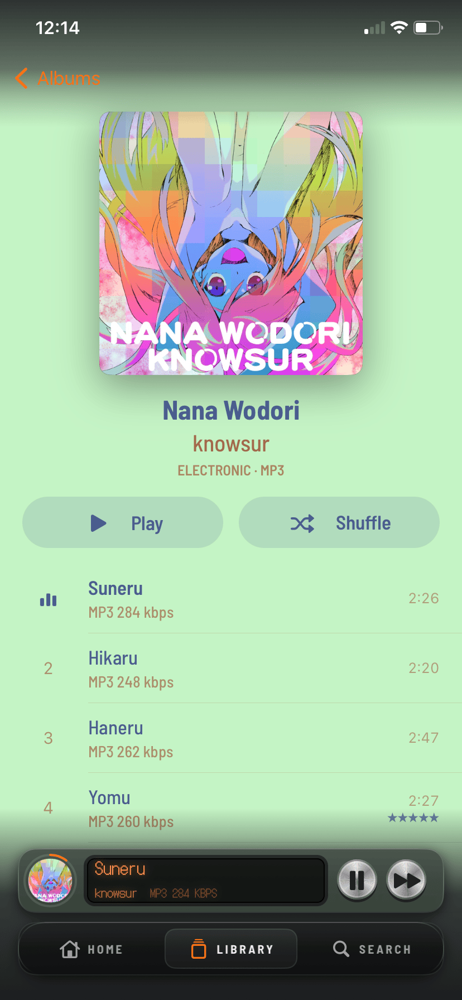
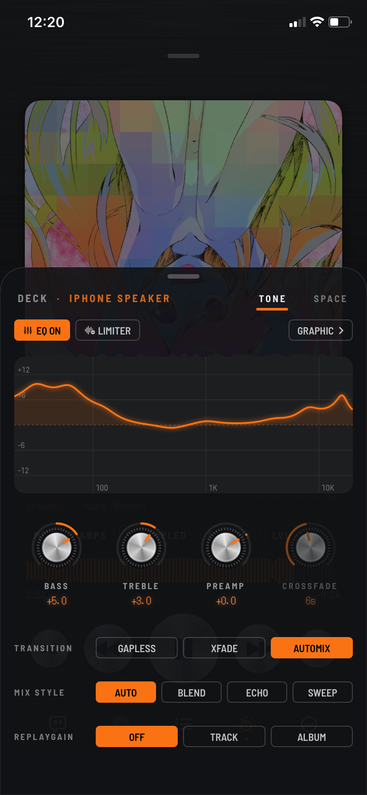
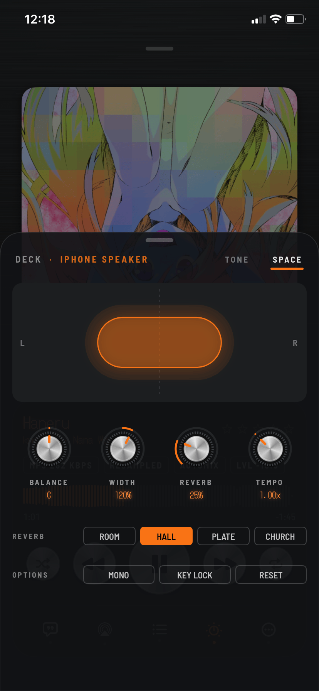
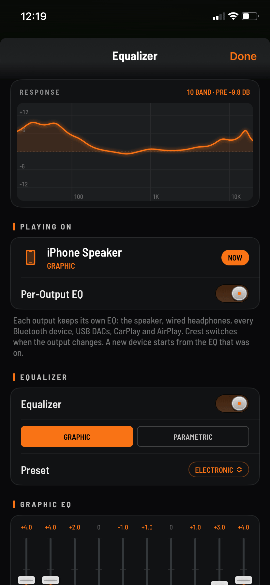

← All tweaks
A music player for your own songs that plays them exactly as good as the files are. It looks like hi-fi gear, not an Apple Music copy.
- Plays almost anything: FLAC, ALAC, WAV, MP3, AAC, Opus, DSD, CUE sheets and more.
- Bit-Perfect mode: nothing changes the sound between the file and your headphones or DAC.
- Gapless, crossfade and Automix, which blends songs on the beat.
- EQ for each output: your speaker, AirPods, DAC and car each keep their own EQ, and Crest switches for you. AutoEQ import included.
- Lyrics, smart playlists, scrobbling (Last.fm, ListenBrainz), CarPlay and a widget.
Everything it can do
- Version
- 1.0.0
- Jailbreak
- Rootless, RootHide
Get it from the pwnapple repo: add it to your package manager, then search for Crest.
9:41 9:41
9:41
9:41
9:41
9:41
9:41
9:41
What's New in 1.0.0
- Out of beta. Thanks to everyone who tested and sent requests.
- Every song at its own sample rate, one after another. When a song ended and the next one had a different rate (say 44.1 kHz, then 96 kHz), the next one was quietly converted to the old rate. Now Crest switches the output between them, with a very short pause only where the rates differ. Albums at one rate stay gapless. Crossfade and Automix still play both songs at one rate while they blend.
- USB DACs that switch rates a moment late no longer get stuck converting everything to one rate.
- Classic: turn the whole app into an iPod classic, with a click wheel you can really turn. Settings → Appearance → Player Skin. Browse by Playlists, Artists, Albums, Songs and Genres. The cover on the right now shows in full (it was cut in half).
- CarPlay log: if CarPlay acts up, Settings → CarPlay → Share CarPlay Log and send it in an issue.
- VU Meters now also shows greyed out in the Classic player, with the reason.
Works on
- iOS 15 to 27. Rootless and RootHide jailbreaks.
- Tested on an iPhone 7 (iOS 15.8.6), an iPhone 11 Pro Max (iOS 16.2), an iPhone XR (iOS 16.0.3), an iPhone SE 2nd gen (iOS 17.5.1) and an iPhone 11 Pro (iOS 18).
- No jailbreak? The TrollStore and sideload versions are on GitHub. They add music with Wi-Fi Transfer only, for now.
- If it ever sends your phone to Safe Mode, open Sileo (it still works there) and uninstall it. Then tell me.
Good to know
- Add music with Library → Add from Files, or with Wi-Fi Transfer from a computer on the same network.
- It also plays the songs already synced to the Music app (not Apple Music downloads).
- CarPlay hasn't been tried in a car yet. If you try it, tell me how it goes.
- A song won't play or sounds wrong? Tell me.
Credits
Original work by Jond_ie. Uses FFmpeg (LGPL 2.1), TagLib (MPL 1.1), Opus and Ogg (BSD), utfcpp (Boost) and Signalsmith Stretch (MIT). The full licences are in Settings → Open-Source Licenses, and the FFmpeg build script and the TagLib change are on GitHub.
Changelog3 earlier versions
Beta 4.1
- Fixed: Beta 4 shipped with the plain fallback screens on iOS 15 to 17 (the newer look didn't load). 4.1 brings the normal screens back everywhere.
- VU meters in the Minimal Player: the ⋯ menu now shows the VU Meters item greyed out with the reason (they only fit the Crest Player). It was missing on iOS 15.
- Files import on sideloads: picking music in Files now shows the import and the result, and the picker accepts every audio type. Still needs testing on a real sideload.
- Plus Beta 4: shuffle an artist from Search, no 50-song search limit, covers you add show right away.
Beta 4
- Shuffle an artist: a shuffle button next to each artist in Search plays all their songs, from every album, in random order.
- More search results: songs in Search no longer stop at 50.
- Covers: a cover you add in Get Info now shows right away. Crest also finds folder art named cover, folder, front, album or AlbumArt (any case, jpg or png), and prefers a FLAC's front cover.
Thanks to HalfManHalfDragon on Discord for these.
Beta 3
- Bit-Perfect mode: your songs reach the output exactly as they are in the file, with nothing in between. Tested sample for sample. A BIT-PERFECT label shows when it really is, and tapping the format chips on Now Playing tells you why when it isn't (Settings → Bit-Perfect).
- Minimal Player: a calm, big-type layout for Now Playing, if you prefer it (Settings → Appearance).
- Big libraries: you see the scan progress ("1,240 of 5,800 songs"), Crest saves as it goes, and it no longer closes during or after a long scan (thousands of songs in one album, or leaving the app mid-scan). Tested with 23,000 songs.
- Fixed: the lyrics page could slide off the screen with no way out (with real cover art).
- iOS 15 fixes: the Settings, Add and EQ Done buttons and the Deck icon were missing.